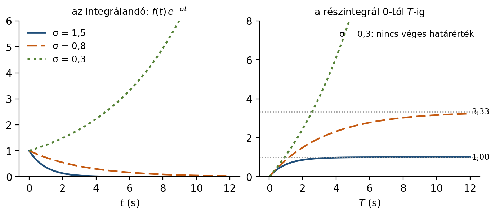
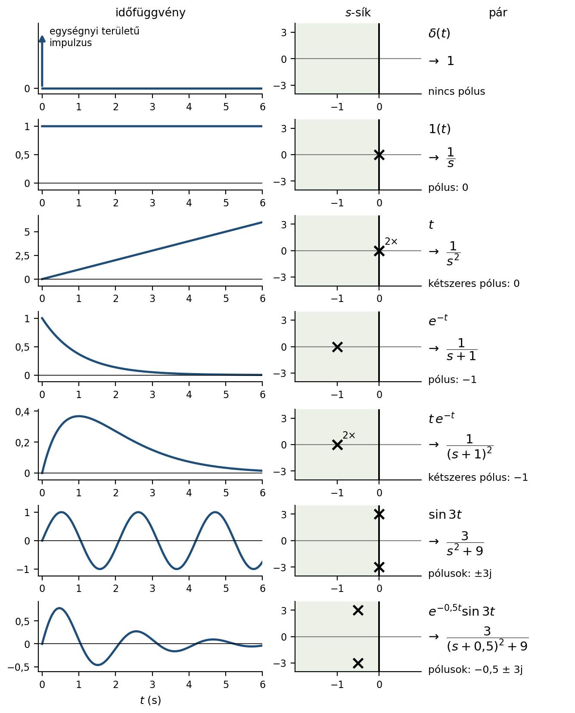

6.1 Definíció, tulajdonságok és
transzformációs táblázat
6.1.1 Motiváció
A tempomat lineáris modellje elsőrendű differenciálegyenlet:
Állandó hajtóerőre a Lineáris
differenciálegyenletek és a karakterisztikus egyenlet alfejezet
receptjével (karakterisztikus polinom, partikuláris megoldás, kezdeti
feltétel) boldogulunk. Egy szabályozási körben azonban több elem
kapcsolódik egymás után: a szabályozó kimenete a beavatkozó bemenete, a
beavatkozó kimenete a folyamaté, a folyamat kimenete pedig visszajut a
szabályozóba. Ha mindegyiket differenciálegyenlet írja le, az eredő
egyenlethez az egyik egyenletet a másikba kellene helyettesíteni,
deriváltakkal együtt. A bemenet és a kimenet kapcsolata közben egy
bonyolult integrál, a konvolúció (convolution)
formájában rejtőzik.
Olyan eszközre van szükségünk, amelyben a deriválás szorzás, az
elemek egymás után kapcsolása szintén szorzás, és a kezdeti feltétel
magától bekerül a számításba. Ez a
Laplace-transzformáció (Laplace transform). Nem új
fizikát mond, hanem más nyelven írja le ugyanazt: az időfüggvény helyett
a komplex
változó egy függvényével számolunk.
6.1.2 Szemlélet
A transzformáció egy mérőeljárás: az
jelet megszorozzuk az
„mérőfüggvénnyel”, és kiszámítjuk a szorzat teljes területét a
tartományon. Minden
értékhez egy szám tartozik, és ezek együtt alkotják az
függvényt. Az
tényező valós
esetén elnyomja a késői értékeket: minél nagyobb a
,
annál gyorsabban.
Mielőtt tovább olvasol, tippeld meg: ha
,
vagyis a jel növekszik, véges lesz-e a terület
mellett? És
mellett?

Az
jel integrálandója és részintegrálja három
értéknél
A válasz az ábrán: ha a súlyozás gyorsabban csökken, mint ahogy a jel
nő
(),
a részintegrál véges értékhez tart
(
mellett
-hez,
mellett
-hoz).
Ha
,
a szorzat maga is nő, és a terület minden határon túl növekszik.
A teljes használati mód három lépés: átlépünk az
-tartományba,
ott algebrai egyenletet oldunk meg, majd visszalépünk az időbe.
A Laplace-transzformáció munkamenete - Az
időtartományban differenciálegyenlet, az s-tartományban algebrai
egyenlet.
Az utolsó lépés, a visszatranszformálás, a következő alfejezet (Inverz transzformáció és részlettörtek) témája;
most az oda irányt és a szabályokat tanuljuk meg.
6.1.3 A definíció és a
konvergenciatartomány
Definíció. Az
,
jel egyoldali Laplace-transzformáltja
Szavakkal:
az
jel
-vel
súlyozott teljes területe. Az időfüggvényt kisbetű, a transzformáltat
nagybetű jelöli
(
és
).
Az
komplex szám (Komplex számok és a komplex
exponenciális): a
valós rész a súlyozás lecsengését, az
képzetes rész a forgását adja, mert
.
Ha
mértékegysége például méter, akkor
-é
méter·szekundum,
-é
pedig
.
Az egyoldali jelző azt jelenti, hogy a
rész nem számít: a rendszert a
pillanattól figyeljük, a múltat a kezdeti feltételek foglalják össze. Ez
illik a szabályozáshoz, ahol a kapcsolás vagy az alapjel-ugrás
pillanatától érdekel a viselkedés. (A kétoldali transzformáció és a
Fourier-transzformációval való teljes kapcsolat jelfeldolgozási téma,
itt nem tárgyaljuk.)
Pontosság kedvéért az integrál alsó határát
-nak,
a nullát balról közvetlenül megelőző pillanatnak tekintjük. Ennek az
impulzusnál lesz szerepe: így a
-ban
lévő impulzus teljes egészében beleesik az integrálba.
Definíció. Azoknak az
értékeknek a halmaza, amelyekre az integrál abszolút konvergens, a
konvergenciatartomány (region of convergence). Az
egyoldali transzformációnál ez félsík:
,
ahol
a jel növekedési sebességétől függ.
Nézzük meg
esetén
(
valós):
A képlet jobb oldala a teljes komplex síkon értelmes (az
pont kivételével), de az integrál csak
esetén véges. Szabályozásban az
alakkal számolunk, és az
helyet pólusnak (pole) nevezzük: ott a nevező nulla. A
pólus helye elárulja a jel növekedési sebességét: a
konvergenciatartomány a legjobboldalibb pólustól jobbra kezdődik. Ez a
„a pólus dönt” elv első megjelenése.
6.1.4 Az alapjelek
transzformáltja
Egységugrás.
értéke
-ra
.
Ez az
eset:
,
ha
.
Dirac-impulzus. A
impulzus (impulse) egy végtelenül rövid, egységnyi
területű lökés. Gondoljunk
széles,
magas téglalapimpulzusra. Ennek transzformáltja
mert kis
-ra
.
Tehát
:
az impulzus minden
-nél
ugyanakkora, és nincs pólusa. Mértékegysége
,
hogy a területe egységnyi legyen.
Szinusz és koszinusz. Az Euler-formula szerint
.
Az exponenciális párját
-val
alkalmazva, valós
esetén:
A valós rész a koszinusz, a képzetes a szinusz transzformáltja:
A pólusok
,
a képzetes tengelyen: a jel sem nem csillapodik, sem nem nő.
A transzformációs táblázat
(,
valós):
,
Pólus(ok)
nincs
(kétszeres)
(kétszeres)

Alapjelek, a pólusaik és a transzformáltjuk
Az ábrát soronként olvasva látszik a szabály: bal félsíkbeli pólus
lecsengő jelet, a képzetes tengelyen lévő egyszeres pólus tartós jelet
(állandót vagy lengést), a tengelyen lévő kétszeres pólus növekvő jelet,
a komplex pár pedig lengést jelent.
6.1.5 A transzformáció
tulajdonságai
Linearitás. Az integrál lineáris, ezért
.
Tétel (deriválás). Ha
differenciálható és
,
ahogy
,
akkor
Levezetés parciális integrálással
(,
):
Szavakkal: a deriválás
-sel
való szorzás, a kezdeti érték pedig levonódik. Ha a jelnek
ugrása van a nullában, akkor
helyett az
érték értendő. Kétszer alkalmazva:
Integrálás. Legyen
.
Ekkor
és
,
így
,
vagyis
.
Az integrálás
-sel
való osztás.
Időbeli eltolás. Ha a jel
idővel késve indul,
,
akkor a
helyettesítéssel
A késleltetés tehát az
szorzótényező. A
tényező nélkül a képlet nem igaz: a jelnek a
előtt nullának kell lennie.
Frekvenciaeltolás.
.
Az exponenciális szorzó az
-síkon
-val
balra tolja a pólusokat. Ebből származik a táblázat csillapodó szinusza:
a
párjában
helyére
kerül.
Szorzás
-vel.
Az integrált
szerint deriválva
.
Például
negatív deriváltja
,
ami a
sora.
Tétel (konvolúció). Két,
-ra
nulla jel konvolúciója
,
és
.
Levezetés: a kettős integrálban megcseréljük a sorrendet, majd
:
Miért fontos ez? Egy lineáris, időinvariáns rendszer kimenete a
bemenet és a rendszer impulzusválaszának konvolúciója: minden múltbeli
bemenetérték egy eltolt, súlyozott impulzusválaszt hagy maga után. Az
-tartományban
ebből egyszerű szorzás lesz,
.
Ez a gondolat vezet az Átviteli függvény, pólusok,
zérusok és erősítés alfejezethez.
Statikus változat (mint a PDF-ben)
Az
jel késleltetése és exponenciális szorzása
Figyeld meg: a késleltetés a pólusokat nem mozdítja, csak a görbét
tolja jobbra; az
szorzó a pólusokat balra viszi, és a lecsengést gyorsítja.
6.1.6 Kézi számpélda
1. Tempomat kezdeti feltétellel. A jármű
m/s sebességgel halad, majd a hajtóerőt állandó
N-ra állítjuk. A modell:
.
1. lépés – transzformálás. A deriválási tétellel
,
a jobb oldal
:
2. lépés – algebra. Rendezve
.
Mindkét oldalt
-rel
osztva:
3. lépés – felbontás. Keresünk
-t
és
-t,
hogy
.
Közös nevezőre hozva a számláló
.
Az együtthatók összevetése:
,
tehát
;
,
tehát
.
4. lépés – visszaolvasás a táblázatból:
m/s.
Ellenőrzés:
;
a határértéke
m/s
;
s-nál
m/s. A
s időállandó
,
ahogy a modell alapján várható.
2. Csillapodó, késleltetett szinusz. Legyen
,
ahol
.
A táblázatból
,
az eltolási szabállyal
Az
helyen
.
Ez egy időtartománybeli integrál értéke is; a lap és a kód ugyanezt
numerikusan is kiszámolja.
3. Négyszögimpulzus. Az
jel (0 és 3 s között
,
különben
)
transzformáltja linearitással és eltolással
.
Az
határértéke
,
a jel területe: ez jó ellenőrzés, hiszen
.
6.1.7 Kód
A sympy képletszerűen is transzformál, így a táblázat
sorai ellenőrizhetők:
import sympy as spt = sp.symbols("t", positive=True)s = sp.symbols("s")a, w = sp.symbols("a omega", positive=True)pairs = [1, t, sp.exp(-a * t), t * sp.exp(-a * t), sp.sin(w * t), sp.exp(-a * t) * sp.cos(w * t)]for f in pairs: F = sp.laplace_transform(sp.sympify(f), t, s, noconds=True)print(f"{str(f):24s} -> {sp.factor(F)}")
A controlkit.laplace.numeric_laplace közvetlenül a
definíciós integrált számolja, standard_pairs pedig a
táblázat párjait adja. A deriválási tételt a tempomat megoldásán, az
eltolást a shift függvénnyel ellenőrizzük (a számítás
,
illetve
helyen történik):
Csak késleltetés
():
húzd a
csúszkát
-ról
-ra.
A pólusok nem mozdulnak, a görbe jobbra csúszik, a
szakasz nulla. A
érték minden egységnyi késleltetésre
-szeresére
csökken: ez az
tényező
-nél.
Csak
-eltolás
():
növeld
-t.
A pólusok balra vándorolnak, a burkoló
gyorsabban süllyed, a lengés frekvenciája
(
rad/s) változatlan.
Állítsd
-t.
A pólusok a képzetes tengelyre kerülnek, a jel állandó amplitúdójú
szinusz lesz.
Állítsd
-öt.
A pólusok a jobb félsíkba kerülnek, a jel növekszik, a
mégis véges, mert az
pont a pólusoktól jobbra, a konvergenciatartományban van. A képletből és
az integrálból kapott érték egyezik.
6.1.9 Tipikus hibák
Tünet: a kezdeti érték eltűnik a megoldásból.
Ok:
felírása a
tag nélkül. Javítás: mindig írd ki a
(és második deriváltnál a
)
tagot; csak nulla kezdeti feltételnél hagyható el.
Tünet:
helyett
.
Ok: az eltolási szabály
alakot követel, a
pedig nem
függvénye. Javítás:
,
ezért az eredmény
.
Tünet:
szorzásnál
.
Ok: előjelhiba a frekvenciaeltolásban.
Javítás: ellenőrizd az exponenciális sorral:
párja
.
Tünet: két jel szorzatának transzformáltja
.
Ok: a szorzat a konvolúció párja, nem a
szorzatfüggvényé. Javítás:
az
transzformáltja;
-t
táblázat- vagy eltolási szabállyal kezeld.
Tünet: a
képlet negatív „területet” ad pozitív integrandusra.
Ok: a képletet a konvergenciatartományon kívül
()
értékelted ki integrálként. Javítás: az integrál csak
-ra
létezik.
6.1.10 Önellenőrzés
Miért kell az
súlyozás, és mit mond a konvergenciatartomány egy
alakú transzformáltnál?
Mi a
és az
transzformáltja, és hogyan következik az egyik a másikból a deriválási
tétellel?
Mi lesz egy 4 s-mal késleltetett egységugrás transzformáltja?
Hova kerülnek a
pólusai, ha a jelet
-vel
megszorozzuk?
Miért kényelmes a konvolúciós tétel egy soros kapcsolásnál?
6.1.11 Feladatok
(A) Írd fel a
jel transzformáltját közös nevezőn.
(A) Add meg az
transzformáltját és a pólusait.
(B) Vezesd le a
transzformáltját kétféleképpen: (a) frekvenciaeltolással a rámpából, (b)
a
-vel
szorzás szabályával.
(B) Írd fel a
magasságú,
s-tól
s-ig tartó négyszögimpulzus transzformáltját, és ellenőrizd az
határértékkel a területét.
(B) Alakítsd algebrai egyenletté, és oldd meg
-re:
,
,
.
(C, programozós) Ellenőrizd numerikusan a
konvolúciós tételt:
,
.
Számold ki kézzel
-t,
majd numeric_laplace-szel hasonlítsd össze
-et
a
szorzattal.
Az egyoldali Laplace-transzformált
a
konvergenciatartományban létezik; a pólusok a jel jellegét árulják el.
Alappárok:
,
,
,
,
szinusz és koszinusz
,
illetve
.
A transzformáció lineáris; a deriválás
,
a második derivált
,
az integrálás
.
A
késleltetés
szorzó, az
szorzó
,
a konvolúció szorzattá válik. A differenciálegyenletből
algebrai egyenlet lesz.
6.1.13 Megoldások
1.
.
Ellenőrzés:
,
és
,
ha
(a kezdeti érték).
2.
.
A pólusok a nevező gyökei:
.
3. (a)
,
frekvenciaeltolással
.
(b)
,
ennek negatív deriváltja
.
A kettő megegyezik.
4.
,
ezért
.
Kis
-re
,
így
,
ami a terület
(
magasság
s).
5. Transzformálva:
,
azaz
,
és
.
A visszatranszformálás a következő alfejezet módszerével
;
ellenőrzés:
,
.